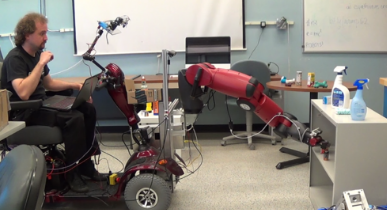

Andreas ten Pas, Colin Keil, Robert Platt.
Efficient and Accurate Candidate Generation for Grasp Pose Detection in SE(3).
IEEE/RSJ International Conference on Intelligent Robots and Systems (IROS),
Prague, Czech Republic, October 2021.
(PDF)
Dian Wang, Colin Kohler, Andreas ten Pas, Alexander Wilkinson, Maozhi Liu, Holly Yanco, Robert Platt.
Towards Assistive Robotic Pick and Place in Open World Environments.
The International Symposium on Robotics Research 2019.
(PDF)
(Video)
(Project page)
Yuchen Xiao, Sammie Katt, Andreas ten Pas, Shengjian Chen, Christopher Amato.
Online Planning for Target Object Search in Clutter under Partial Observability.
IEEE International Conference on Robotics and Automation (ICRA), Montreal, Canada, May 2019.
(PDF)
(Video)
Marcus Gualtieri, Andreas ten Pas, Robert Platt.
Pick and Place Without Geometric Object Models.
IEEE International Conference on Robotics and Automation (ICRA), Brisbane, Australia, May 2018.
(PDF)
(Video)
Ulrich Viereck, Andreas ten Pas, Kate Saenko, Robert Platt.
Learning a visuomotor controller for real world robotic grasping using simulated depth images.
Conference on Robot Learning (CoRL), USA, November 2017.
(PDF)
(Video)
Marcus Gualtieri, James Kuczynski, Abraham M. Shultz, Andreas ten Pas, Robert Platt, Holly Yanco.
Open World Assistive Grasping Using Laser Selection.
IEEE International Conference on Robotics and Automation (ICRA), Singapore, June 2017.
(PDF)
(Video)

Marcus Gualtieri, Andreas ten Pas, Kate Saenko, and Robert Platt.
High precision grasp pose detection in dense clutter.
IEEE/RSJ International Conference on Intelligent Robots and Systems (IROS), South Korea, October 2016.
(PDF)
(UR5 Video)
(Baxter Video)
(Code)
Andreas ten Pas and Robert Platt.
Using Geometry to Detect Grasp Poses in 3D Point Clouds.
International Symposium on Robotics Research (ISRR), Italy, September 2015.
(PDF)
(Video)
(ROS Package)
Giulia Franchi, Andreas ten Pas, Robert Platt and Stefano Panzieri.
The Baxter Easyhand: A Robot Hand That Costs $150 US in Parts.
IEEE/RSJ International Conference on Intelligent Robots and Systems (IROS), Germany, September 2015.
(PDF)
Rui Li, Robert Platt, Wenzhen Yuan, Andreas ten Pas, Nathan Roscup, Edward Adelson.
Localization and Manipulation of Small Parts Using GelSight Tactile Sensing.
IEEE/RSJ International Conference on Intelligent Robots and Systems (IROS), USA, September 2014.
(PDF)